Emulating the Sega Genesis - Part III
Also available on dev.to
Written December 2021/January 2022 by transistor_fet
A few months ago, I wrote a 68000 emulator in Rust named Moa. My original goal was to emulate a simple computer I had previously built. After only a few weeks, I had that software up and running in the emulator, and my attention turned to what other platforms with 68000s I could try emulating. My thoughts quickly turned to the Sega Genesis and without thinking about it too much, I dove right in. What started as an unserious half-thought of "wouldn't that be cool" turned into a few months of fighting documentation, game programming hacks, and my sanity with some side quests along the way, all in the name of finding and squashing bugs in the 68k emulator I had already written.
This is Part III in the series. If you haven't already read Part I and Part II, you might want to do so. Part I covers setting up the emulator, getting some game ROMs to run, and implementing the DMA and memory features of the VDP. Part II covers adding a graphical frontend to Moa, and then implementing a first attempt at generating video output. Part III will be about debugging the various problems in the VDP and CPU implementations to get a working emulator capable of playing games. For more details on the 68000 and the basic design of Moa, check out Making a 68000 Emulator in Rust.
- Previously
- Fixing The Colours
- Drawing A Blank
- What About Those Interrupts
- And Now For Something (A Little) Different
- Back to the Genesis
- VRAM Discrepancies
- You Can't Write There, Sir
- Fixing Sprites
- Not All The Data
- Scrolling The Scrolls
- Fixing Line Scrolling
- Rewriting
- Conclusion
Previously
After about two weeks of work on adding Sega Genesis support to my emulator, I had implemented memory operations for the video display processor (VDP), and written a draw loop to generate the video frames according to the SEGA documentation. The result of all that work was this:
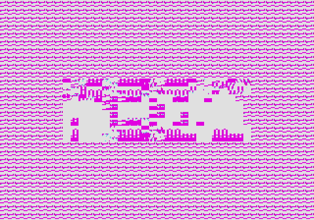
This is Sonic 1 attempting to show the SEGA logo at startup. It's better than Sonic 2 which was just a black screen, a few log messages, and then... nothing... The few other games I tried were no better.
When I had started this project, I thought it probably wouldn't be too hard to get something as simple as the SEGA logo working, but I was wrong. After spending a day or two fiddling with quick fixes that didn't fix much of anything, I committed my work in progress to git, so that I could track and undo any changes I made, and started in to some serious debugging. The following is my journey of debugging, on and off over the next six weeks, until I managed to get Sonic 2 running well enough to play.
Fixing The Colours
The most obvious thing that was wrong was the colours, so I looked into this first. Since I
couldn't be sure that all the data was getting into the VDP correctly, I needed to simplify the
output a bit, so I wrote an alternate draw_frame() function to display just the patterns instead
of the scroll tables. It would draw each pattern in memory across the screen from left to right, top
to bottom so that I could inspect them better. They might not look like a coherent picture, being
only 8x8 pixels each and arranged in an unintended order, but it should at least show something.
The result was this:
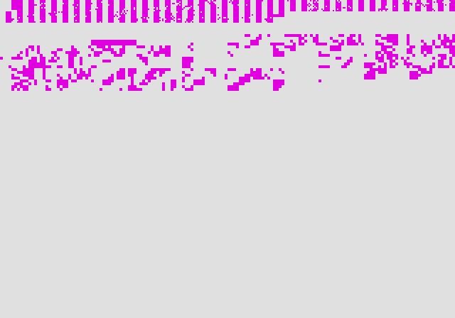
There is definitely some kind of pattern data being displayed because the patterns are not a solid colour, but the colours are clearly wrong. I'm expecting some blue colours since it should be printing the SEGA logo.
For about a day I was doubting and testing the transfer of data into CRAM. I had found a minor bug earlier in that code. After staring at the values in CRAM for a while, I noticed that the colour values were actually correct. There were values of 0xEEE and 0xE00 and a few others, so it had to be a problem with reading the CRAM to get the u32 colours value. The code to convert CRAM values into colours was:
let rgb = read_beu16(&self.cram[((palette * 16) + colour) as usize..]);
(((rgb & 0xF00) as u32) >> 4) | (((rgb & 0x0F0) as u32) << 8) | (((rgb & 0x00F) as u32) << 20)
There had definitely been some problems with those complex shift operations, but the tricker problem turned out to be the index into the CRAM that was wrong. Since the CRAM is an array of u8, which was chosen in order to reuse the same transfer and DMA code with VRAM, I needed to multiply the index by 2 before reading the word at that location. Now the colours actually make sense:
Switching back to displaying the scrolls I'm now getting a white screen, but not much else. sigh
In Sonic 1, parts of the SEGA logo were displayed if I only drew Scroll A or Scroll B, but
displaying both together didn't work. I needed to add the mask colour, which is always colour 0 in
each palette. I modified the .blit() method to not draw anything if the colour 0 is used (later
changed to 0xFFFFFFFF to avoid a conflict with the colour black, represented by 0), and now I was
getting something.
Now it's actually showing the SEGA logo! The scrolls are finally working, even if they still don't look right and the animation is painfully slow.
Drawing A Blank
While Sonic 1 seemed to at least try to display something, Sonic 2 and a few other games wouldn't display anything at all. With the various debug messages turned on, the logs showed it was initializing various devices and then would get caught in a loop where it would read the status word of the VDP over and over again. Clearly it was looking for a specific bit value in the status word before it would move on, but I didn't know which one.
The status word is
returned when reading (instead of writing) from the VDP's control port. It contains a number of
status flag bits and is one of the few ways the CPU can get feedback from the VDP, with interrupts
being the other. In my existing code, the FIFO and NTSC bits were set statically, and the DMA bit
was being set and reset during DMA operations, so it probably wasn't related to those. Given that
this problem happens right away, it's probably not looking at the sprite flags either. I reckon
it's something to do with the HBLANK/VBLANK bits, or possibly the V Interrupt Happened bit.
The HBLANK and VBLANK bits are set when the video output signal is in its blanking phases. On a
CRT, it takes time after a line has been drawn for the electron beam to move back to the start of
the next line, and be ready to output the next line of data. It also takes time (a lot more time)
after the entire screen has been drawn for the beam to move back to the top of the screen again to
start the next refresh. Since the video signal's data is directly output to the CRT as soon as it's
received (the joys of analogue signals), the video signal itself needs to incorporate these blanking
delays where no data is sent. These blanking periods just so happen to be convenient times for the
CPU to update or change data in the VDP, when those changes wont affect the output. This is
especially important during the vertical blanking period, when the positions of everything on the
screen can be updated at once before the next frame is drawn to prevent artifacts and glitches in
the image.
I was moving fast to get something working, so I quickly implemented the vertical blanking bit by setting it just before getting to the end of the frame, at 14_218_000 ns, and then resetting the bit at 16_630_000 ns when the frame is drawn and the vertical interrupt is triggered.
This worked for the time being, but it turned out to cause another error that slowed the animation
down by half, which I didn't notice until after I had the scrolling working. It wasn't until I
could actually play the games that I noticed the problem, and by that point I had forgotten about
this bit. It took me a day or two of debugging before I finally tracked down the problem to the
VBLANK bit.
After the vertical interrupt occurs, some games would busy wait until the vertical blanking bit was set before actually running the game loop. Sonic 2 is one such game, but Sonic 1 doesn't do this check. Since the bit is only set about 2ms before the next vertical interrupt, the game's frame updater would only start 2ms before the next interrupt, and would still be updating the frame at that point, so it would ignore the second vertical interrupt. As a result, it would take two frames of time (2 vertical interrupts) before one frame of the game would be drawn, and only one cycle of the game loop would execute. Sonic was moving at exactly half speed. Doubling the amount of simulated time fixed the issue (which didn't make any sense at first). I even went to the trouble of implementing more accurate instruction timing in the 68000 in order to see if it was caused by the fact that all the instructions had previously been running in 4 clock cycles. Shown below is the more recent code with the fixed blanking behaviour.
The following code is in the updated VDP's .step() function, including the VBLANK bit handling.
The HBLANK code looks similar but with different timing values.
self.state.v_clock += diff;
if (self.state.status & STATUS_IN_VBLANK) != 0 && self.state.v_clock >= 1_205_992 && self.state.v_clock <= 15_424_008 {
self.state.status &= !STATUS_IN_VBLANK;
}
if (self.state.status & STATUS_IN_VBLANK) == 0 && self.state.v_clock >= 15_424_008 {
self.state.status |= STATUS_IN_VBLANK;
... // Vertical Interrupt and Frame Update Code
}
if self.state.v_clock > 16_630_000 {
self.state.v_clock -= 16_630_000;
}
Finally! The SEGA logo in Sonic 2 is (almost) displaying correctly. There are a few glitches in the logo but that's because I hadn't implemented the reverse patterns yet. Adding support for that fixed the logo right up.
What About Those Interrupts
While Sonic 2 was now advancing enough to show the scrolls, it was very slow, the same as Sonic 1, from the start of the program through displaying the logo and then finally getting to the title screen. It was taking half a minute or more.
My first suspicion was to check the interrupts, since it's usually the vertical interrupt that triggers the progression of time in these games. It's a reliable signal to use for knowing how long to show the logo screen for, or when to read the controller input, calculate movement, and then update the screen. Turning on the debugging output for the interrupts showed that they weren't occurring anywhere near as fast as they should be. It would take seconds before an interrupt occurred, and they would occur randomly rather than at a regular pace.
I'm not all that surprised given that I knew there were issues with the implementation, and I had run into problems with them when working on Computie support, but I hadn't been sure how I wanted to fix them. Now I needed to fix them.
In the original implementation, there was a trait for Interruptable devices with a function that
would be called by the interrupt controller when an interrupt occurred, which would trigger the
interrupt handler. That works in theory, but an interrupt might not be handled right away if
interrupts are disabled, and the callback might not be re-called when interrupts were re-enabled.
There was also no mechanism for acknowledging an interrupt, and the 68k implementation's handling of
the interrupt priority mask was buggy. The result was that interrupts would only occur when
everything happened to line up, which wasn't very often.
For the 68000, an interrupt can occur with a priority between 1 and 7. A higher number is a higher
priority, and interrupts below a certain priority number can be disabled using a priority mask value
stored in the %sr register. When an interrupt occurs, the CPU will check that priority number
against the priority mask. If the requested interrupt number is strictly higher than the mask, then
the %sr and %pc registers will be pushed onto the stack, the priority mask will be changed to
the current number (to prevent a duplicate handling of the same interrupt), and the handler will be
run. If the interrupt priority equals or is lower than the mask, the CPU will keep running whatever
it had been running before, at least until the priority mask changes, or a higher priority unmasked
interrupt occurs.
For devices like the serial controller in Computie, the interrupt signal will be asserted and stay asserted until the cause of the interrupt is manually acknowledged by writing a certain value to the serial controller. For the Genesis, on the other hand, the interrupts behave more like one-shots where there is no manual acknowledgement, and the signal should be de-asserted as soon as it's acknowledged, essentially.
As for the CPU, if an interrupt is masked when the signal was assert, and then unmasked while the signal is still asserted, it will run the handler (ie. the interrupt signals are level triggered, not edge triggered). If the signal goes away before the interrupt is unmasked, the handler will never be run.
In hardware, interrupts will only be checked at a certain point in the CPU's cycle, usually between
the execution of instructions, so it's actually pretty reasonable for the emulated CPU to manually
check for interrupts at the end of an instruction cycle. All it has to do is check the interrupt
controller object in System. The Interruptable trait wasn't needed anymore. Devices call the
interrupt controller to set an interrupt, and the CPU calls the interrupt controller to check if any
are active. It's not a terribly complicated problem, but it's easy to get wrong in subtle ways,
such that it might work for some devices but not others.
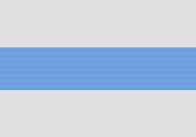
Now it runs at what seems like the right speed! Lets ignore, for a minute, the other glaring issues...
And Now For Something (A Little) Different
At this point, I had the colours and interrupts sorted out, the scrolls were being displayed somewhat correctly, and the sprites were sort of working, but multi-cell sprites were still broken. Everything I had tried to fix the sprites didn't work, and I had no idea if it was because of the VDP implementation or a bug in the CPU. And to make matters worse, Sonic was falling through the floor during the gameplay.
And here I got stuck. I had been doing nothing but debugging for a week at this point, three weeks after starting on the Genesis and about five weeks since I had started the emulator. I had made good progress but this last week was a grind. There were multiple issues, both in the VDP and the CPU. I had already fixed the few things that really stood out, but I was running out of threads to pull on, and getting frustrated. I needed to try something else.
I had not yet proven out the 68000 implementation, so some of the problems I was encountering could be in there and not in the VDP code. There was no easy way to tell where the problem was without tracing a lot of assembly code to figure out what it was supposed to do, looking for a one bit change somewhere in the CPU registers or in memory. I needed a way to test the 68000 better, and why not try implementing another system?
The Macintosh 512k also used the 68000 and it's a fairly simple computer, in terms of I/O. It had a very basic video display circuit made from generic logic that looped through memory addresses and shifted the bits into the video output stream. The display only supported black and white so each pixel was a single bit that was either on or off. The ROMs that were embedded on the motherboard are available at archive.org, so I started making some devices and running the ROMs to see if I could find some bugs in the 68000 emulation alone.
At the same time, I looked into implementing the Z80 that the Genesis would also need. Some games seemed to get stuck waiting for the non-existent Z80 to respond, so I thought I might as well start a Z80 implementation too. It would be something different to work on when I was stuck on everything else. At least then I'd make some progress, which would encourage me to keep going.
In order to develop a Z80 implementation, I needed some Z80 code to run on it, and any I/O devices that the code needed. I could write my own Z80 code of course, but that wouldn't test the implementation well enough, beyond just basic functioning of the instructions. I needed code for an existing platform, with all its expectations of how the real system behaves embedded in its logic, and that meant implementing devices for an existing platform. I looked around for the simplest Z80 platform I could find, which turned out to be the TRS-80. I'm not the biggest fan of the TRS-80, but I did have a "Model I" in my computer collection at one point (that I sadly had to sell), so it wasn't entirely foreign to me. I could get away with just implementing the video display and the keyboard in order to run the BASIC interpreter that comes in its ROM.
Over the next month, I mostly worked on these sub-projects, as well as on another Computie hardware iteration. The TRS-80 implementation came together fairly smoothly apart from a bug in the Z80 implementation's shift operation that took me a day or two of tracing the Level I BASIC ROM's assembly code to fix. (Thanks to George Phillips for the well documented assembly code).
The Macintosh implementation didn't go as smoothly however. I did manage to find and fix a few bugs in the 68000, and I got far enough to display the Dead Mac screen, but I got stuck just before the end of the ROM's initialization where it opens the default device drivers. At some point, it attempts to write to a location in the ROM. In hardware that shouldn't have an affect, except that I have some code in Moa to raise an error when that happens, since it's likely a bug. Ignoring that error didn't make it get any farther. I couldn't for the life of me find out what was wrong, but at one point, using another emulator, I was able to confirm that if the ROMs ran on a system that didn't mirror the RAM and ROM address exactly as the hardware does, the ROM wont boot. facepalm Effort went into making sure the Macintosh was not cloned like the IBM PC, so I was fighting against those effort as well. After a while I decided to give the Genesis a try again.
Back to the Genesis
After getting stuck on the Macintosh implementation, I picked up the Genesis again. I had spent almost an entire month away. In that time, I had worked on another hardware revision for Computie, and wrote the article "Making a 68000 Emulator In Rust". I also had improved the Moa debugger, implemented the Z80 entirely, filled in a number of missing 68k instructions, and finished implementing all the 68k instruction decoding (although a few instructions are still not implemented because they aren't use by any code I've tried to run). I also fixed some bugs in existing instructions, such as MOVEM which copies data to or from multiple registers at a time. Perhaps some things could be fixed?
On the surface though, the results were the same as last time. The scrolls were mostly working, but
the sprites were broken, and Sonic was still falling through the floor to his death. I had added
the Z80 coprocessor into the system, now that it was implemented (I might as well), but I had left
the Z80 address space as one big 64 KB MemoryBlock. The Z80 alone didn't changed anything in
Sonic 2, or in Sonic 1, which was still getting stuck at the title screen as it a had before.
I needed a way to isolate the drawing of sprites so I could better figure out what was wrong, and it was only at this point it occurred to me to search for demo and test ROMs that might help. That immediately turned up ComradeOj's demos, particularly Tiny Demo, which scrolls some text across the screen, and GenTest v3 which contains a number of screens with different graphics to test possible issues, including a display of some static sprites.
I also came across the BlastEm emulator in C, which has a builtin debugger. I was able to modify and compile a local version which dumps out the contents of VRAM at a specific point in a ROM's execution. With this, I could verify that the data in VRAM in Moa was correct and the DMA and transfer code was in fact working correctly. I ended up not digging into the BlastEm code much beyond this, but the validation it provided was extremely helpful.
VRAM Discrepancies
The above image is the results of running TinyDemo. Clearly the text is all garbled but I haven't a clue what could be causing it. At least it was a very small ROM, with straight-forward assembly code.
The first thing I could do was to try to isolate where the problem was. Was it caused by getting
data into VRAM, or was it somewhere else. I started by running the demo in BlastEm and dumping the
VRAM at the point in the ROM just after the VDP is initialized, at address 0xDE. I went to the same
point in Moa and again dumped the contents of VRAM to compare them.
From BlastEm, the start of VRAM where the patterns are stored looks like this:
0000: 0x0000 0x0000 0x0000 0x0000 0x0000 0x0000 0x0000 0x0000
0010: 0x0000 0x0000 0x0000 0x0000 0x0000 0x0000 0x0000 0x0000
0020: 0x0110 0x0110 0x0110 0x0110 0x0110 0x0110 0x0111 0x1110
0030: 0x0110 0x0110 0x0110 0x0110 0x0110 0x0110 0x0000 0x0000
0040: 0x0011 0x1111 0x0011 0x0000 0x0011 0x0000 0x0011 0x1110
0050: 0x0011 0x0000 0x0011 0x0000 0x0011 0x1111 0x0000 0x0000
0060: 0x0110 0x0110 0x0110 0x0110 0x0110 0x0110 0x0011 0x1100
0070: 0x0001 0x1000 0x0001 0x1000 0x0001 0x1000 0x0000 0x0000
0080: 0x0011 0x1111 0x0011 0x0000 0x0011 0x0000 0x0011 0x1110
0090: 0x0011 0x0000 0x0011 0x0000 0x0011 0x0000 0x0000 0x0000
00a0: 0x0111 0x1110 0x0001 0x1000 0x0001 0x1000 0x0001 0x1000
00b0: 0x0001 0x1000 0x0001 0x1000 0x0001 0x1000 0x0000 0x0000
00c0: 0x0011 0x0000 0x0011 0x0000 0x0100 0x0000 0x0000 0x0000
00d0: 0x0000 0x0000 0x0000 0x0000 0x0000 0x0000 0x0000 0x0000
00e0: 0x0111 0x1110 0x0110 0x0011 0x0110 0x0011 0x0111 0x1110
00f0: 0x0110 0x1000 0x0110 0x0110 0x0110 0x0111 0x0000 0x0000
And from Moa, it looks like this:
0000: 0x0000 0x0000 0x0000 0x0000 0x0000 0x0000 0x0000 0x0000
0010: 0x0000 0x0000 0x0000 0x0000 0x0000 0x0000 0x0000 0x0000
0020: 0x0110 0x0110 0x0110 0x0110 0x0110 0x0110 0x0111 0x1110
0030: 0x0110 0x0110 0x0110 0x0110 0x0110 0x0110 0x0000 0x0000
0040: 0x0011 0x1111 0x0011 0x1111 0x0011 0x1111 0x0011 0x1111
0050: 0x0000 0x0011 0x0011 0x1111 0x0011 0x1111 0x0011 0x0011
0060: 0x1100 0x0110 0x0110 0x0110 0x0110 0x0110 0x0000 0x0000
0070: 0x1100 0x1100 0x0000 0x0000 0x0000 0x0000 0x0000 0x0000
0080: 0x0011 0x1111 0x0011 0x1111 0x0011 0x1111 0x0011 0x1111
0090: 0x0000 0x0011 0x0011 0x1111 0x0011 0x1111 0x0000 0x0000
00a0: 0x1111 0x1110 0x0110 0x1100 0x0000 0x0000 0x0000 0x0000
00b0: 0x0000 0x0000 0x0000 0x0000 0x0000 0x0000 0x0000 0x0000
00c0: 0x0011 0x1111 0x0011 0x1111 0x0011 0x0100 0x0000 0x0011
00d0: 0x1111 0x1111 0x1111 0x1111 0x1111 0x1111 0x1111 0x1111
00e0: 0x1111 0x1110 0x0110 0x0110 0x1111 0x0110 0x1111 0x0110
00f0: 0x0110 0x0110 0x1011 0x0000 0x0110 0x0111 0x1110 0x0000
It's almost the same, but if you look closely there are a few discrepancies. Of course I was
expecting it to be caused by the transfer code, but I traced the assembly for TinyDemo to see where
the data in VRAM was coming from. There's a loop that simply copied data from RAM address
0xFF0000 into VRAM address 0x0000. I dumped the contents of RAM at that location and sure
enough, the difference occurred there too, so it was something further up the chain. Finally I was
making some progress now that I could narrow down the problems better.
Tracing back in the disassembled output quickly led to the decompress function, which loads and
decompresses the raw binary data in the ROM into an in-memory representation that the VDP can use.
...
1f2: e24d lsrw #1,%d5 ; start of decompress loop
1f4: 40c6 movew %sr,%d6
1f6: 51cc 000c dbf %d4,0x204
1fa: 1f5d 0001 moveb %a5@+,%sp@(1)
1fe: 1e9d moveb %a5@+,%sp@
200: 3a17 movew %sp@,%d5
202: 780f moveq #15,%d4
204: 44c6 movew %d6,%ccr
206: 6404 bccs 0x20c
208: 12dd moveb %a5@+,%a1@+
20a: 60e6 bras 0x1f2 ; jump to start of outer loop
20c: 7600 moveq #0,%d3
20e: e24d lsrw #1,%d5
210: 40c6 movew %sr,%d6
212: 51cc 000c dbf %d4,0x220
216: 1f5d 0001 moveb %a5@+,%sp@(1)
21a: 1e9d moveb %a5@+,%sp@
21c: 3a17 movew %sp@,%d5
21e: 780f moveq #15,%d4
220: 44c6 movew %d6,%ccr
222: 652c bcss 0x250
224: e24d lsrw #1,%d5
226: 51cc 000c dbf %d4,0x234
22a: 1f5d 0001 moveb %a5@+,%sp@(1)
22e: 1e9d moveb %a5@+,%sp@
230: 3a17 movew %sp@,%d5
232: 780f moveq #15,%d4
234: e353 roxlw #1,%d3
236: e24d lsrw #1,%d5
238: 51cc 000c dbf %d4,0x246
23c: 1f5d 0001 moveb %a5@+,%sp@(1)
240: 1e9d moveb %a5@+,%sp@
242: 3a17 movew %sp@,%d5
244: 780f moveq #15,%d4
246: e353 roxlw #1,%d3
248: 5243 addqw #1,%d3
24a: 74ff moveq #-1,%d2
24c: 141d moveb %a5@+,%d2
24e: 6016 bras 0x266
250: 101d moveb %a5@+,%d0
252: 121d moveb %a5@+,%d1
254: 74ff moveq #-1,%d2
256: 1401 moveb %d1,%d2
258: eb4a lslw #5,%d2
25a: 1400 moveb %d0,%d2
25c: 0241 0007 andiw #7,%d1
260: 6710 beqs 0x272
262: 1601 moveb %d1,%d3
264: 5243 addqw #1,%d3
266: 1031 2000 moveb %a1@(0000000000000000,%d2:w),%d0
26a: 12c0 moveb %d0,%a1@+
26c: 51cb fff8 dbf %d3,0x266
270: 6080 bras 0x1f2 ; jump to the start of the outer loop
...
The above snippet only shows the main loop of the decompress function and not the beginning and
ending parts of the function. Instructions 0x266 and 0x26a are where a byte of data is written
to the location in RAM where the decompressed data goes, and which will then be loaded into VRAM
verbatim.
I knew from the above dumps that the first byte that differs occurs at offset 0x46, and dumping the
registers shows the address 0xFF0000 in register %a1, which is incremented each time the loop
occurs. To get to the point of failure, I just need to set a breakpoint at 0x266 and continue
until register %a1 contains 0xFF0046, and then dump all the register values to look for a
difference between Moa's register values and BlastEm's.
Aha! The value of %d6 is different. Moa has 0x2710 while BlastEm has 0x2700. Looking at the
disassembly, the only use of %d6 is to temporarily hold the contents of the flags register (%ccr
which is the lower byte of status register %sr). The flag register values are also different!
The Extend bit, which is the 5th bit in the status register is the only difference between the two
emulators. I was already suspicious of the flags, since they are rather complicated to simulate and
can behave differently for different instructions. Of all the flags, the Extend which isn't used
by many instructions is probably the one I'm not emulating correctly, so I seem to be on the right
track.
Stepping through the program in BlastEm shows that the Extend flag is set after the lsrw #1,%d5
instruction, which occurs a few times in the function. The Motorola
Documentation for the LSR
instruction shows that both the Extend flag and Carry flag should be set to the bit value
shifted out (the least significant bit). The rust code for the LSd instruction, which sets the
flags, is shown below.
self.set_logic_flags(pair.0, size);
if pair.1 {
self.set_flag(Flags::Carry, true);
self.set_flag(Flags::Extend, true);
}
I must have assumed that the .set_logic_flags function would clear the Extend flag when I
originally wrote this code, as it does for the other four flags. Most logic operations don't affect
the Extend flag though, so the .set_logic_flags() function is only clearing the lower 4 bits (the
Extend flag being the 5th bit). After the call, the Extend and Carry flags are set to true
only if the bit shifted out, which is stored inpair.1, is true. If the Extend flag was set to
true from a previous instruction, it wouldn't be cleared. That was enough of a discrepancy to cause
the garbled text, and a whole lot more. Effing flags...
While the Extend flag is never directly tested in a comparison in this function, there are some
ROXd instructions (where d is the direction (L)eft or (R)ight). Unlike the ROd instruction,
which rotates bits within the same value, the ROXd instruction rotates through the Extend flag,
so the value in Extend will be put into the number (either the left or right end), and the bit
rotated out of the opposite end will be put into Extend. So an error in the Extend flag could
definitely cause some problem with the decompress code.
Adding a line of code to clear the Extend flag before the .set_logic_flags() function is called
is enough to fix it. Now the text in the demo is showing legibly. It's still nothing like what it
looks like in BlastEm, which has a moving background that stretches the text vertically, but I'm
still calling it a win.
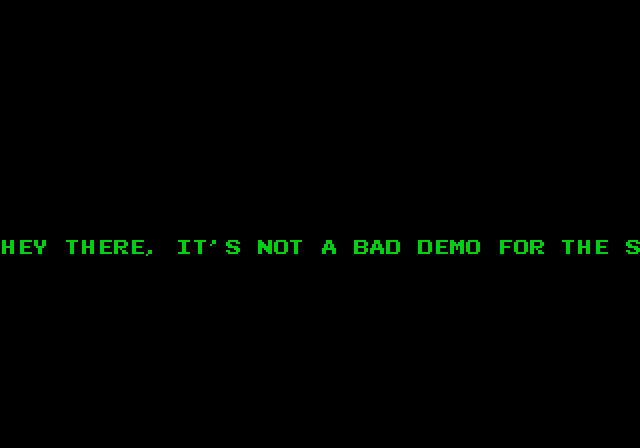
And looking at Sonic 2, it's still very garbled but Sonic is no longer falling to his death! The
Extend flag in the shift and rotate instructions was the cause of whichever comparison lead to
Sonic not being on firm ground. I didn't even have to dig into the source of that problem in the
Sonic 2 ROM to fix it, which was a relief.
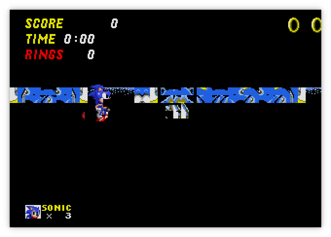
You Can't Write There, Sir
Switching gears, I tried GenTestV3, which would immediately fail when run because it attempted to
write to what should have been a read only memory area (the ROM data itself). I had added a way to
mark a MemoryBlock as read only, which would raise an error when the .write() function is called
on that block, as a means of catching errors. It had helped catch a few things when working on the
Macintosh support, so I had added it to the Genesis ROMs as well.
Since I was getting an error when the attempted write occurred, I knew exactly where the fault was,
address 0x2976, and I also knew what the values of the registers at that point were:
...
292c: 7000 moveq #0,%d0
292e: 7200 moveq #0,%d1
2930: 7400 moveq #0,%d2
2932: 7600 moveq #0,%d3
2934: 7800 moveq #0,%d4
2936: 7a00 moveq #0,%d5
2938: 7c00 moveq #0,%d6
293a: 7e00 moveq #0,%d7
293c: 207c 0000 0000 moveal #0,%a0
2942: 227c 0000 0000 moveal #0,%a1
2948: 247c 0000 0000 moveal #0,%a2
294e: 287c 0000 0000 moveal #0,%a4
2954: 2a7c 0000 0000 moveal #0,%a5
295a: 2e7c 0000 0000 moveal #0,%sp
2960: 4ed6 jmp %fp@
2962: 303c 7fff movew #0x7fff,%d0
2966: 207c 00ff 0000 moveal #0xff0000,%a0
296c: 30fc 0000 movew #0,%a0@+
2970: 51c8 fffa dbf %d0,0x296c
2974: 4ed2 jmp %a2@
2976: 297c 4000 0000 movel #0x40000000,%a4@(4) ; invalid write here
297c: 0004
297e: 383c 7fff movew #0x7fff,%d4
2982: 38bc 0000 movew #0,%a4@
2986: 51cc fffa dbf %d4,0x2982
298a: 4ed2 jmp %a2@
...
And the register values:
Breakpoint reached: Attempt to write to read-only memory at 4 with data [64, 0]
@ 18201056 ns
0x0000297e: 383c 7fff
movew #00007fff, %d4
Status: Running
PC: 0x0000297e
SR: 0x2700
D0: 0x00000000 A0: 0x00000000
D1: 0x00000000 A1: 0x00000000
D2: 0x00000000 A2: 0x00002592
D3: 0x00000000 A3: 0x00000000
D4: 0x00000000 A4: 0x00000000
D5: 0x00000000 A5: 0x00000000
D6: 0x00000000 A6: 0x00002588
D7: 0x00000000
SSP: 0x00000000
USP: 0x00000000
Current Instruction: 0x0000297e MOVE(Immediate(32767), DirectDReg(4), Word)
0x00000000: 0x00ff 0xfffe 0x0000 0x0200 0x0000 0x30e2 0x0000 0x30ee
0x00000010: 0x0000 0x3076 0x0000 0x308e 0x0000 0x309a 0x0000 0x30a6
0x00000020: 0x0000 0x30b2 0x0000 0x30be 0x0000 0x30ca 0x0000 0x30d6
0x00000030: 0x0000 0x306a 0x444f 0x4e27 0x5420 0x4c4f 0x4f4b 0x2041
The register %a4 contains 0x00000000, plus an offset of 4, so it's trying to write to address
0x00000004, the reset vector. That can't possibly be right. In BlastEm, I tried setting the same
address as a breakpoint and, would you look at that, the breakpoint isn't reached! That code isn't
even running in BlastEm when GenTest is run. If you notice from the snippet above, jmp
instructions are being used to return to the calling function, and branch instructions are being
used to call them, rather than using the stack. So the return address is not on the stack, but in
register %a2, which contains 0x2592 which is the instruction after the one that called this
function. We're on to something here.
256c: 6700 dcae beqw 0x21c
2570: 60d8 bras 0x254a
2572: 7400 moveq #0,%d2
2574: 3e7c 0000 moveaw #0,%sp
2578: 2c7c 0000 0000 moveal #0,%fp
257e: 4df9 0000 2588 lea 0x2588,%fp
2584: 6000 03a6 braw 0x292c ; jump to a different function (shown above)
2588: 45f9 0000 2592 lea 0x2592,%a2
258e: 6000 03e6 braw 0x2976 ; jump to the troublesome function
2592: 297c 6000 0002 movel #1610612738,%a4@(4)
2598: 0004
259a: 4bf9 0000 8156 lea 0x8156,%a5
Address 0x258e contains a branch instruction to the exact address that the erroneous write occurs
on, and before that, the return register %a2 is loaded with the return value. What about the
instruction before that? It's a branch to 0x292c which appears in the previous snippet, which
seems to be a function that sets all the register values to 0! Wait, why would it do that? The
register values were almost all 0 when the error occurred, except for the two registers used as
return values, so it did run that code, but why would it clear everything just before using an
now zero'd register as an address.
I set a breakpoint for 0x2572, which looked like the start of the current function, given that
there's a branch instruction just before. The %a4 register, interestingly enough, contains
0xc00000, which would make sense as the intended value of %a4 where the erroneous write
occurred, if all the registers hadn't been cleared just before. Most of the other registers are 0
except for %a2 which contains 0x2554, possibly the return value of the caller.
...
253e: 297c 6000 0002 movel #1610612738,%a4@(4)
2544: 0004
2546: 6000 0396 braw 0x28de
254a: 45f9 0000 2554 lea 0x2554,%a2
2550: 6000 04f8 braw 0x2a4a
2554: 1e03 moveb %d3,%d7
2556: 0007 00ef orib #-17,%d7
255a: 0c07 00ef cmpib #-17,%d7 ; the value of %d7 should
; be 0xff, but it's 0xef
255e: 6700 0012 beqw 0x2572 ; this is where the problem
; occurs (shouldn't jump but does)
2562: 1e03 moveb %d3,%d7
2564: 0007 00bf orib #-65,%d7
2568: 0c07 00bf cmpib #-65,%d7
256c: 6700 dcae beqw 0x21c
2570: 60d8 bras 0x254a
...
There's a jump to the start of our function that shouldn't run at 0x255e, which... isn't quite
what I was expecting. I was somehow expecting the previous code to somehow make sense, but alright,
it's maybe taking a jump that shouldn't happen (even though it seems like it should never ever
happen), so why is it jumping when it shouldn't.
I set a breakpoint for 0x2554 in both emulators to see if that code would run and this time,
BlastEm runs that code. Stepping through the code in both emulators shows the status register
values are different just after the comparison at 0x255a. groan Not the flags again.
Looking closer at the code though, the values of %d7 are different between the emulators as well.
The comparison in Moa is setting the flags correctly for the data used, but the data values are
different, and so BlastEm doesn't make the branch where Moa does. Ok, so maybe it's not the flags
this time. So why are the values of %d7 different. Well it's set just a few instructions ahead
with the lower byte value of %d3, which in Moa is 0. In BlastEm, it's 0xff. Aha! So where is
%d3 set?
It's not set in the code just above the comparison, but there is a branch to 0x2a4a just before
which looks like a register-returning function call, and the code at that location does change
%d3.
2a4a: 7600 moveq #0,%d3
2a4c: 7e00 moveq #0,%d7
2a4e: 13fc 0040 00a1 moveb #0x40,0xa10009
2a54: 0009
2a56: 13fc 0040 00a1 moveb #0x40,0xa10003
2a5c: 0003
2a5e: 4e71 nop
2a60: 4e71 nop
2a62: 1639 00a1 0003 moveb 0xa10003,%d3
2a68: 0203 003f andib #0x3f,%d3
2a6c: 13fc 0000 00a1 moveb #0,0xa10003
2a72: 0003
2a74: 4e71 nop
2a76: 4e71 nop
2a78: 1e39 00a1 0003 moveb 0xa10003,%d7
2a7e: 0207 0030 andib #0x30,%d7
2a82: e50f lslb #2,%d7
2a84: 8607 orb %d7,%d3
2a86: 4ed2 jmp %a2@
Tracing through the debuggers shows that this is the code where BlastEm gets 0xff into register
%d3 and it's doing it by reading the controller input. 0xa10003 is the byte address of the data
port for controller 1, and 0xa10009 is the control port for controller 1. I had taken a stab at
implementing the weird TH counting that
the controllers need to do, but I hadn't tested it. I had only hooked up the Start button to a key
press, which was all I had needed up until this point, to get through the title screen to the game
play.
Here, from the code, it seemed as if the correct behaviour, at least according to how BlastEm worked,
was for the controllers to return 0xff when no buttons are pressed, rather than 0. Changing
that one thing is Moa got to the first screen of GenTest asking which test to run! Success! Well,
I still needed to fix the controllers properly, since button presses still didn't work, but this is
at least the cause of GenTest not running.
There turned out to be quite a few minor bugs in the TH counting code. The count was incrementing twice as often as it should have, and the button states needed to be inverted (1 means the button is not pressed and 0 means it is). I also needed to reset the counter when the control port was written to, for the count to be in sync with what the ROM was expecting. Not all ROMs progressed through the entire count, if they only needed to read a few buttons. Eventually I got it sorted out and buttons were working but it took a while to get them right. The latest code for the controllers is here
Fixing Sprites
I had been back at it for about 4 or 5 days now and I had already ticked off two major issues. I could now control the characters in game play, even though I couldn't see much of what was going on still. The elephant in the room was those sprites not working, so with my enthusiasm high, I pressed on to tackle the sprites.
Fixing the Extend flag bug fixed Sonic falling through the floor to his death, so that was a
significant step forward, but multi-cell sprites were still being drawn incorrectly. Luckily the
GenTest ROM has a page that displays a static multi-pattern sprite, both forward and reversed.
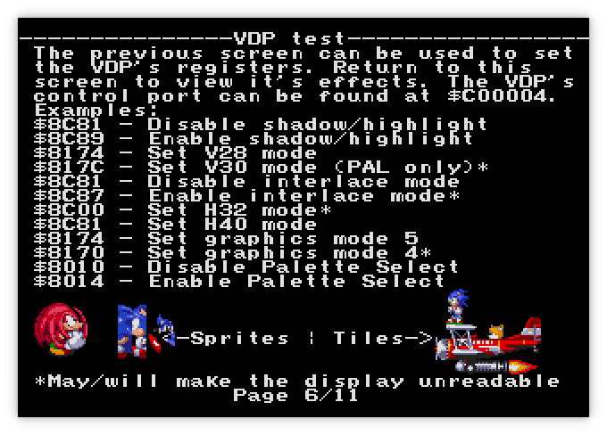
The forward sprite (Knuckles) works fine, but the reversed sprite (Sonic) is messed up. If you look closely, you can see the vertical columns of cells seem to line up correctly, but the horizontal arrangement of the columns is mixed up. This one turned out to be a bit subtle.
I had tried fiddling with reversing the cell drawing order in multicell sprites but to no avail. It turned out when switching the revere-sprite code I was changing both the order of the cells, and also reversing the positions they were drawn in, rather than switching only one. I was also adjusting both coordinates instead of just the horizontal arrangement. At the time I didn't have a way of just drawing one sprite in one location to inspect it closely enough to figure out what was wrong, but the GenTest ROM made it much clearer what was wrong. I also had an off by one error with reversed sprites where I needed to subtract one from the size in order to get the right vertical row of patterns to use.
First, the existing code is shown below. Note: Multi-cell sprites are drawn top to bottom, left to right, unlike everything else in the Genesis, so the outer loop is for the horizontal direction, and the inner loop is the vertical direction. The variables that appear are defined as follows:
pattern_nameis the 16-bit pattern specifier(h_pos, v_pos)is the pixel position on screen where the sprite should be drawn(size_h, size_v)is the size in cells of the sprite(h_rev, v_rev)are bools of whether the sprite should be reversed in a given directionself.is_sprite_on_screen(x, y)returns whether those pixel positions are on-screen (sprites can be entirely off the screen, in which case they wont be drawn)
for ih in 0..size_h {
for iv in 0..size_v {
let h = if !h_rev { ih } else { size_h - ih };
let v = if !v_rev { iv } else { size_v - iv };
let (x, y) = (h_pos + h * 8, v_pos + v * 8);
if self.is_sprite_on_screen(x, y) {
let iter = self.get_pattern_iter(
(pattern_name & 0xF800)
| ((pattern_name & 0x07FF) + (h * size_v) + v)
);
frame.blit(x as u32 - 128, y as u32 - 128, iter, 8, 8);
}
}
}
Changing the following lines is enough to fix it. It needs to take an extra 1 off the h and v values when the sprite is reversed, and also use the loop's values to calculate the position where the cell should be drawn instead of using the previously calculated cell positions, which have already been reversed.
let h = if !h_rev { ih } else { size_h - 1 - ih };
let v = if !v_rev { iv } else { size_v - 1 - iv };
let (x, y) = (h_pos + ih * 8, v_pos + iv * 8);
And now the sprites work! That was surprisingly simple given how broken they looked before. I had been close, but it only takes an off by one error to make the output mangled beyond recognition sometimes.
The intro sprites in Earthworm Jim are working now too. I had tried to use that game for testing sprites before I had taken that break, but it wasn't as helpful as the GenTest sprite screen.
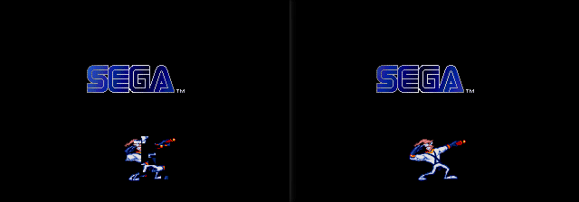
Not All The Data
How is Sonic 2 looking now that the sprites have been fixed.
Well... it honestly doesn't look any different. In fact this is the same image from after the
Extend flag was fixed, but before the sprites were fixed. I literally could not tell the
difference between the image before and after fixing the sprites, they were so identical, so I
didn't even bother adding another screenshot. No wonder I couldn't fix the sprites before, when I
was using Sonic 2 to test with. The garbled sprites in Sonic 2 were caused by something else
entirely.
Are there any other test screens in the GenTest ROM that looked messed up? Sure enough, all the video output patterns are broken. I'll use the colour bleed test as an example.
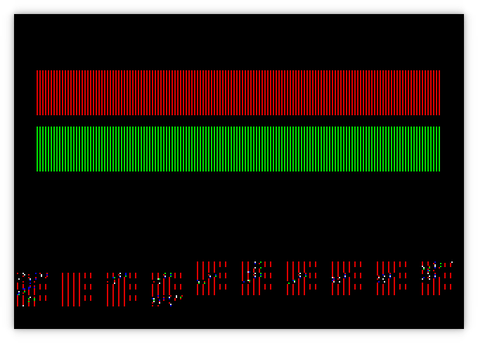
Well that's definitely not what it should look like. Inspecting the VRAM shows shows that only about half the data is loaded that should be loaded by comparison to BlastEm. I found the spot in the ROM where the data is loaded into the VDP using a DMA transfer. The source data in RAM actually is complete this time, even though the VRAM data is only partially present, so this time it is an issue with transferring data into the VDP. Playing around with the debugger in BlastEm I noticed something in the output for the VDP state:
**DMA Group**
13: 00 |
14: 46 | DMA Length: $4600 words
15: 00 |
16: 88 |
17: 7F | DMA Source Address: $FF1000, Type: 68K
It says the DMA length is 0x4600 words (not bytes). Crap... I had assumed that the DMA count was in bytes, not words. Could it really be that simple a problem? Yup...
I was subtracting 2 instead of 1 from the count every iteration of the DMA loop, causing it to end half way through the intended transfer size. It really was that simple
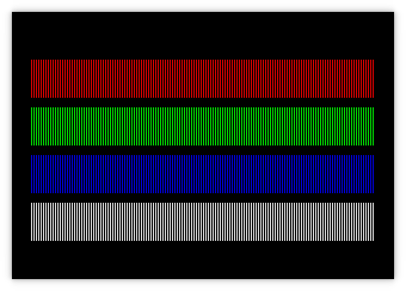
And now Sonic 2 looks like this:
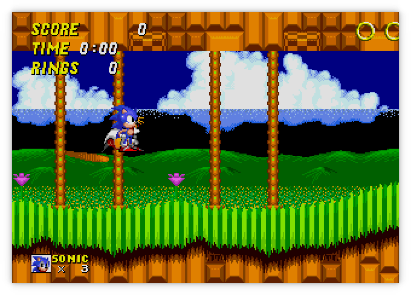
Much better! It almost looks right except for the foreground that's out of place. I haven't even attempted to implement the horizontal and vertical scrolling functionality of the VDP yet, so that must be what's going on. This is finally coming together.
Scrolling The Scrolls
It had been less than a week since I had returned to it, and I had fixed all the glaring issues that were mangling the graphics. It was finally time to implement something new from the Sega docs, that I had left for later. Later was now! It was time to implement the scrolling features.
As mentioned before, the scrolls are much bigger than can fit on the screen at once. In order to be able to quickly update what's shown on the screen without changing all the cell data, the scroll planes can be moved relative to the screen to change what part of the scroll plane will appear on the screen. Each scroll can be moved independently of each other to create a parallax effect.
The vertical and horizontal scrolling work a bit differently from each other. For one, the vertical scroll direction has its own special memory, the VSRAM, where as the horizontal scroll data is stored in a table in VRAM, with the starting address of the table set by a VDP register.
For the vertical scroll position, either a single offset can be used to move the whole plane, or every two cells can have a different vertical offset. Each offset is an unsigned number between 0 and 1023 (which is the maximum number of pixel of the largest possible scroll size of 128 cells). Since VSRAM is 80 bytes, that means there can be 40 16-bit words, 20 for each of the two scrolls interleaved with each other, which covers the maximum 40 cell width of the screen.
For the horizontal scroll position, either a single offset can move the whole plane, or every cell can have a different offset, or every line can have a different offset. For the cell offset setting, only a maximum of 30 offsets for each scroll are needed, but they are stored in a table with the same size as used by the per-line scrolling mode. The per-line scrolling mode needs 896 bytes for the NTSC version's 224 line output (960 bytes for the full 240 line resolution of PAL). Like the vertical offsets, each offset is a 16-bit word and ranges from 0-1023, and the offsets for Scroll A and Scroll B are interleaved in the horizontal scroll table.
pub fn get_hscroll(&self, hcell: usize, line: usize) -> (u32, u32) {
let scroll_addr = match self.mode_3 & MODE3_BF_H_SCROLL_MODE {
0 => self.hscroll_addr,
2 => self.hscroll_addr + (hcell << 5),
3 => self.hscroll_addr + (hcell << 5) + (line * 2 * 2),
_ => panic!("Unsupported horizontal scroll mode"),
};
let scroll_a = read_beu16(&self.vram[scroll_addr..]) as u32 & 0x3FF;
let scroll_b = read_beu16(&self.vram[scroll_addr + 2..]) as u32 & 0x3FF;
(scroll_a, scroll_b)
}
pub fn get_vscroll(&self, vcell: usize) -> (u32, u32) {
let scroll_addr = match (self.mode_3 & MODE3_BF_V_SCROLL_MODE) {
0 => 0,
_ => vcell >> 1,
};
let scroll_a = read_beu16(&self.vsram[scroll_addr..]) as u32 & 0x3FF;
let scroll_b = read_beu16(&self.vsram[scroll_addr + 2..]) as u32 & 0x3FF;
(scroll_a, scroll_b)
}
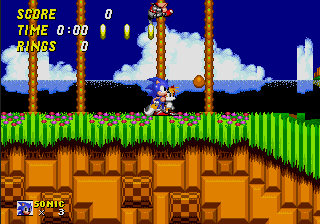
There are some weird glitches in Scroll B but Scroll A seems to work fine. It only moves a whole cell at a time, so Scroll A appears jerky compared to the sprites. It's especially noticeable at the edge of the bridge. The bridge is made of sprites, which can be positioned to the exact pixel, but the ground where the bridge is supposed to be attached to will only move when a whole cell has changed.
Fixing Line Scrolling
It had been about a week and a half since I took up the Genesis again. With the help of the test ROMs and BlastEm, I had made pretty quick work of a whole bunch of little bugs, going from what was still a very garbled output to having the games playable. I wasn't done yet though.
After spending a week working on Computie when my new PCBs arrived, I returned to the Genesis to work on the per-line scrolling. I also dabbled a bit with audio support, adding a dummy device for the YM2612 audio FM synthesizer chip, which is mapped to the Z80 coprocessor's address space, and fixing the Z80 banked memory area, so that it could access the 68k ROM or RAM data. With that, I was able to get the Z80 coprocessor working well enough that Sonic 1 would get past the title screen and into the game.
I was bothered that per-line scrolling wasn't working, and that the scrolls moved in a jerky
fashion. I needed to fix it but it would require more than a few simple changes. Since the
per-cell scrolling was working, I chose to write a completely different version of the
draw_scrolls function just for per-line scrolling. I could integrate them later if possible but
it would be easier to completely rewrite it without breaking what I already had.
I was still hoping to use the pattern iterator I had written, but I would need to change it to take the line number on initialization, so that I could output only one line of a pattern at a time. I then used another loop inside the horizontal and vertical cell loops to iterate over each of the 8 lines in a pattern, using a different offset for each line of the pattern.
My first attempt used the same loop to draw both scrolls at once, but the results were this:
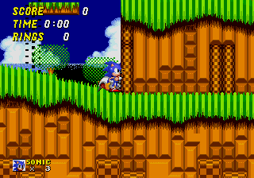
There is clearly an issue caused by the scrolling since moving until the screen is on a cell boundary shows the foreground plane (Scroll A) completely on top of the background plane (Scroll B), but when the offset is between cells, Scroll B is getting drawn on top. Separating the drawing of each scroll (at the cost of duplicating the loops) fixed this problem, but there is still an issue with these strange black artifacts showing on the screen.
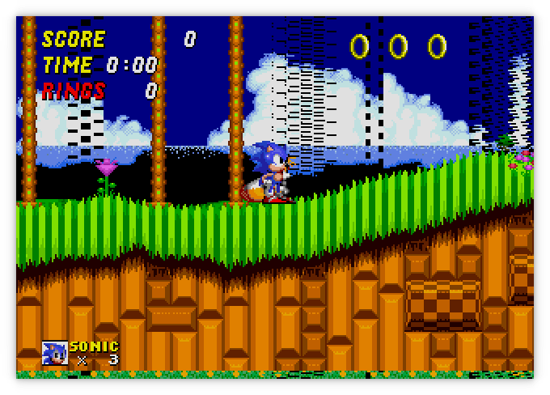
It took me a while of fussing around with the code before I realized that I had the line and column coordinates backwards when passing them to the scroll fetching functions. That's a little embarrassing. I was sending the cell_x value to the horizontal scroll offset when it should have been getting the cell_y value (ie. the horizontal offset is based on what line is currently being drawn, so you give it the line number and it gives you the x offset). Swapping these around and reorganizing the loops fixed this. Now the scrolling is smooth!
Rewriting
There were still some issues with the left hand and bottom edges of the screen where the foreground
is not drawn to the edge because the scroll offset is not on a cell boundary. Changing the existing
code to add an extra cell was not as trivial as it would appear. Shifting the cells over caused the
sprites to be misaligned with the background, and starting the iterators one cell early would mean
starting at -1, which would require changing to signed numbers, and possibly calculating an
invalid offset due to the presence of negatives, or adding many checks to prevent that.
I also didn't have drawing priority working because I didn't have all the cell and sprite priority bits calculated at the same time, to determine which to display, and the code was awfully messy at this point. It was time to rewrite all the display code. I had learned so much and run into so many issue by this point. I had a better understanding of how it was all supposed to work now, and I could incorporate all those lessons in the next version.
In order to recreate the video output more accurately, I opted to more faithfully simulate what the hardware VDP would be doing. Since it's generating a video signal on the fly, it draws the image pixel by pixel, line by line, exactly in step with the CRT. If I did it this way, it would also allow me to implement the priority bits to decide on which pixel from the different planes should be drawn to the screen, since everything would be in the same loop. There would be a lot more duplicated calculations and slower performance as a result, but since the existing performance wasn't an issue, it should still be fast enough to emulate at full speed.
To make it easier to debug in the short term, I duplicated the code to calculate the cell indices for the scrolls. Later, I can break this up into multiple functions to reuse code, and also store some of the calculated values across iterations to avoid recalculating, but I wanted everything in one loop to make it easier to adjust while I debugged it. I did break out the vertical drawing loop from the horizontal one, which will eventually be used to step through the drawing line by line, instead of drawing the whole frame before the vertical interrupt, but this isn't yet implemented.
pub fn draw_frame(&mut self, frame: &mut Frame) {
self.build_sprites_lists();
for y in 0..(self.screen_size.1 * 8) {
self.draw_frame_line(frame, y);
}
}
pub fn draw_frame_line(&mut self, frame: &mut Frame, y: usize) {
let bg_colour = ((self.background & 0x30) >> 4, self.background & 0x0f);
let (hscrolling_a, hscrolling_b) = self.get_hscroll(y / 8, y % 8);
for x in 0..(self.screen_size.0 * 8) {
let (vscrolling_a, vscrolling_b) = self.get_vscroll(x / 8);
let pixel_b_x = (x - hscrolling_b) % (self.scroll_size.0 * 8);
let pixel_b_y = (y + vscrolling_b) % (self.scroll_size.1 * 8);
let pattern_b_addr = self.get_pattern_addr(self.scroll_b_addr, pixel_b_x / 8, pixel_b_y / 8);
let pattern_b_word = self.memory.read_beu16(Memory::Vram, pattern_b_addr);
let priority_b = (pattern_b_word & 0x8000) != 0;
let pixel_b = self.get_pattern_pixel(pattern_b_word, pixel_b_x % 8, pixel_b_y % 8);
let pixel_a_x = (x - hscrolling_a) % (self.scroll_size.0 * 8);
let pixel_a_y = (y + vscrolling_a) % (self.scroll_size.1 * 8);
let pattern_a_addr = self.get_pattern_addr(self.scroll_a_addr, pixel_a_x / 8, pixel_a_y / 8);
let pattern_a_word = self.memory.read_beu16(Memory::Vram, pattern_a_addr);
let mut priority_a = (pattern_a_word & 0x8000) != 0;
let mut pixel_a = self.get_pattern_pixel(pattern_a_word, pixel_a_x % 8, pixel_a_y % 8);
if self.window_addr != 0 && self.is_inside_window(x, y) {
let pixel_win_x = x - self.window_pos.0.0 * 8;
let pixel_win_y = y - self.window_pos.0.1 * 8;
let pattern_win_addr = self.get_pattern_addr(self.window_addr, pixel_win_x / 8, pixel_win_y / 8);
let pattern_win_word = self.memory.read_beu16(Memory::Vram, pattern_win_addr);
// Scroll A is not displayed where ever the Window is displayed, so we replace Scroll A's data
priority_a = (pattern_win_word & 0x8000) != 0;
pixel_a = self.get_pattern_pixel(pattern_win_word, pixel_win_x % 8, pixel_win_y % 8);
};
let mut pixel_sprite = (0, 0);
let mut priority_sprite = false;
for sprite_num in self.sprites_by_line[y].iter() {
let sprite = &self.sprites[*sprite_num];
let offset_x = x as i16 - sprite.pos.0;
let offset_y = y as i16 - sprite.pos.1;
if offset_x >= 0 && offset_x < (sprite.size.0 as i16 * 8) {
let pattern = sprite.calculate_pattern(offset_x as usize / 8, offset_y as usize / 8);
priority_sprite = (pattern & 0x8000) != 0;
pixel_sprite = self.get_pattern_pixel(pattern, offset_x as usize % 8, offset_y as usize % 8);
if pixel_sprite.1 != 0 {
break;
}
}
}
let pixels = match (priority_sprite, priority_a, priority_b) {
(false, false, true) => [ pixel_b, pixel_sprite, pixel_a, bg_colour ],
(true, false, true) => [ pixel_sprite, pixel_b, pixel_a, bg_colour ],
(false, true, false) => [ pixel_a, pixel_sprite, pixel_b, bg_colour ],
(false, true, true) => [ pixel_a, pixel_b, pixel_sprite, bg_colour ],
_ => [ pixel_sprite, pixel_a, pixel_b, bg_colour ],
};
for i in 0..pixels.len() {
if pixels[i].1 != 0 || i == pixels.len() - 1 {
let mode = if pixels[i] == (3, 14) {
ColourMode::Highlight
} else if (!priority_a && !priority_b) || pixels[i] == (3, 15) {
ColourMode::Shadow
} else {
ColourMode::Normal
};
frame.set_pixel(x as u32, y as u32, self.get_palette_colour(pixels[i].0, pixels[i].1, mode));
break;
}
}
}
}
#[inline(always)]
fn get_pattern_addr(&self, cell_table: usize, cell_x: usize, cell_y: usize) -> usize {
cell_table + ((cell_x + (cell_y * self.scroll_size.0 as usize)) << 1)
}
fn get_pattern_pixel(&self, pattern_word: u16, x: usize, y: usize) -> (u8, u8) {
let pattern_addr = (pattern_word & 0x07FF) << 5;
let palette = ((pattern_word & 0x6000) >> 13) as u8;
let h_rev = (pattern_word & 0x0800) != 0;
let v_rev = (pattern_word & 0x1000) != 0;
let line = if !v_rev { y } else { 7 - y };
let column = if !h_rev { x / 2 } else { 3 - (x / 2) };
let offset = pattern_addr as usize + line * 4 + column;
let second = x % 2 == 1;
let value = if (!h_rev && !second) || (h_rev && second) {
(palette, self.memory.vram[offset] >> 4)
} else {
(palette, self.memory.vram[offset] & 0x0f)
};
value
}
fn build_sprites_lists(&mut self) {
let sprite_table = self.sprites_addr;
let max_lines = self.screen_size.1 * 8;
self.sprites.clear();
self.sprites_by_line = vec![vec![]; max_lines];
let mut link = 0;
loop {
let sprite = Sprite::new(&self.memory.vram[sprite_table + (link * 8)..]);
let start_y = sprite.pos.1;
for y in 0..(sprite.size.1 as i16 * 8) {
let pos_y = start_y + y;
if pos_y >= 0 && pos_y < max_lines as i16 {
self.sprites_by_line[pos_y as usize].push(self.sprites.len());
}
}
link = sprite.link as usize;
self.sprites.push(sprite);
if link == 0 {
break;
}
}
}

Finally... It's working pretty good, it scrolls smoothly, it sorts out the priority so Sonic appears behind the trees. It works better than this gif even shows. I recorded it at 15 frames a second instead of 30 or 60, to keep the file size small, so when Sonic gets his fast boots, it seems like the sprite isn't animated, but it's actually just moving too fast to be recorded.
For those who are curious, out of each 16.6ms interval between updating a frame, the old display code was running in around 2ms, and the new code is running in around 6ms, so the new code is significantly slower (but still well within the time available). This is in part because I'm calculating which cell to draw for each of the planes, and fetching the scroll values, for each pixel on the screen. This could be improved upon by storing the pattern data for the current cells for each plane between iterations and only updating them when the cell changes. That said, doing so will only make a small improvement in performance, while also making the code harder to read.
Conclusion
This project definitely turned into more than I was expecting when I started. I had hoped to get some pretty graphics after only a few weeks of work, (the initial implementation only took about that long), but that didn't happen and it quickly became my white whale. I had to finish it. The real journey was the eight weeks of switching between debugging and working on other projects while the problems percolated in the back of my brain. But I did it. I got it to a playable (albeit still buggy) state.
Special thanks to ComradeOj for the demo ROMs, and Mike Pavone and the other contributors for BlastEm (github mirror). Without these, it would have taken a lot more time to get this working.
There is still a lot to do, and I will likely work on this project on and off for a while to come. Audio needs to be added, and a lot of games don't quite run correctly because of one reason or another. Thanks for joining me and I hope you learned something as well, or at least got to enjoy some nostalgic thoughts of the Sega Genesis. If there's anything you'd like to me to write more about or you have any feedback about these posts, I'd love to hear it on twitter or by email. Happy Emulating!